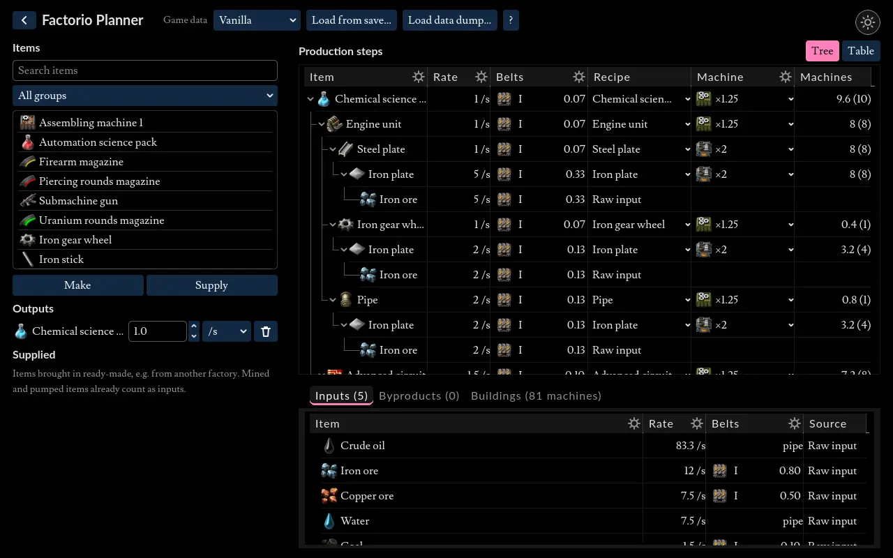

Factorio Planner
The interactive parts of this page require javascript to be enabled.
(There are no ADs or tracking scripts installed on this website!).

The planner is a download of around 14 MB.
A production planner for Factorio. Choose the items you want and how fast you want them, and it works out every production step, shown as a tree or a table, with how many machines each step needs, which belts carry it, and the raw inputs, byproducts and buildings for the whole factory. It's a rewrite of my 2017 JavaFX planner, now in C++ and Godot so it runs in the browser.
The data for vanilla Factorio and Space Age 2.1 are built in. Modded games can be loaded too, as described below.
This is an unofficial fan tool. Factorio and its item icons belong to Wube Software.
Controls
Choosing what to make
Pick the items you want from the item list, then set how many of each. The planner lays out every step needed to make them.
| Find an item | Type in Search items, or pick a group below it |
| Make an item | Double-click it, or select it and press Make (or Enter) |
| Bring an item in ready-made | Select it and press Supply |
| Choose several items | Ctrl or Shift click, then Make or Supply |
| Set how many you want | Type the number or use the arrows, then pick /s, /min, /h or × belt |
| Remove an item | Its bin button |
Working with the steps
Each step shows its recipe, machines and belts. Fluids are shown in pipes, and belts are numbered by tier.
| Show a tree or a table | The Tree and Table buttons |
| Choose a step's recipe or machine | Click its Recipe or Machine cell, then pick from the menu |
| Supply or make a step's item, or reset its choices | Right-click the step |
| Column settings, and which machines and belts you have | The cog on a column title, or right-click the title |
| More room for the steps | The button at the far left of the top bar |
On a touch screen, tap to select and then tap Make or Supply. Right-clicking a step has no touch equivalent yet. On narrow screens, the Factory and Plan tabs switch between the two halves.
For a modded game, run factorio --dump-data, then choose Load data dump… in the Game data list and open the data-raw-dump.json it writes. The ? beside it explains how.